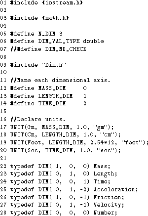

Using G++, it was possible to implement a general dimensional analysis package Dim.h which incorporates the ideas discussed in section 2. Some of the capabilities of this package are illustrated by the following program which uses C++ to simulate a block sliding down a surface. The program is based on similar examples presented in [CG88] and [Hil88].

Figure 1: Program Declarations
Figure 1 shows the declarations in the program. Lines 5 and 6 give definitions used by the package: N_DIM is the number of dimensions, and DIM_VAL_TYPE describes the default underlying type for dimensioned quantities. The package is included on line 9, and defines several macros which are used subsequently. On lines 17-20 we use one of those macros to declare units along each dimensional axis with conversion factors (to the chosen reference units) and print-names. From the given conversion factors, we can deduce that Gm is the chosen reference unit along MASS_DIM, Cm along LENGTH_DIM and Sec along TIME_DIM. Using UNIT( Name, ) also creates a scaling object called Name and a units object called Name_. Specifically, the given declarations create scaling objects Gm, Cm, Feet and Sec and unit objects Gm_, Cm_, Feet_ and Sec_. The use of these objects will be described later. Finally we typedef mnemonic names for several dimensioned types.
Figure 2 shows the program code. We first define an auxiliary function height(). Note that the multiplication of a dimensioned length by the scalar 0.5 is accepted by the system. In the main program which follows, we first declare dimensioned constants and variables on lines 6-14. Note that the scaling objects Gm, Cm and Sec created by the UNIT macro are used to create dimensioned literals in a very natural way. The compiler will signal an error if the dimension of the initializing expression conflicts with the dimension of the variable being declared.
On lines 16-20 we output prompts and input dimensioned quantities. Scaling objects are used in a manner similar to manipulators [Str91] to allow dimensional validation of the input statements at compile time. These input manipulators also serve to scale the input values from the specified units to their chosen reference units.
Lines 22-29 illustrate the very natural expressions possible due to operator overloading. If any of the expressions is dimensionally inconsistent, a compile-time error occurs. Line 25 uses the unary + operator to extract the actual value of a (dimensionless) DIM expression (as in [Hil88]). Lines 30-34 illustrate the use of the unit objects (created by the UNIT macro) as output manipulators to output the print-names of the units for a quantity along with its magnitude. The unit objects in the output statements also perform automatic scaling of the length dimension from its internal representation in Cm to its output in Feet. Once again, a compile-time error results if the dimension of the constructed unit object does not match the dimension of the quantity being output.
The implementation and capabilities of the Dim.h package will be more fully described elsewhere. For now, we simply list some of its capabilities: